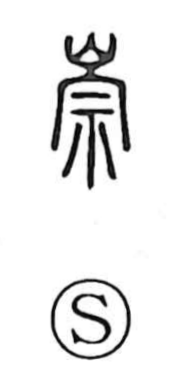

崇

Kun: agameru, tattobu | On: suu
lofty ・ high ・ to revere ・ to worship
Explanation
A phono-semantic character: the mountain element signals the idea of height, while 宗 serves as the phonetic, giving the on reading suu and evoking the main, ancestral house—a focus of esteem. The Erya says, “A mountain that is great and high is called 嵩 (suu),” and 崇 appears interchangeably with 崧 and 高 in that sense. From the image of a towering mountain arose the general meaning “high, lofty,” which, when applied to people and things, naturally extended to “to revere” and “to worship.”